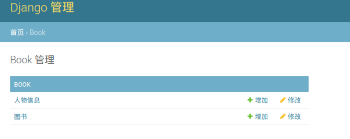
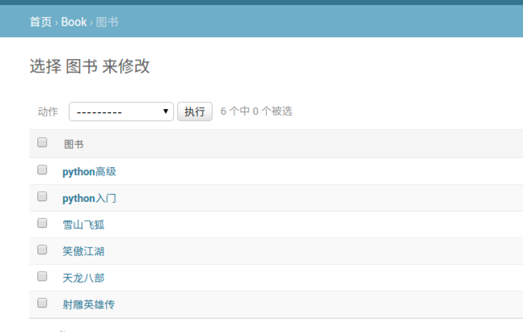
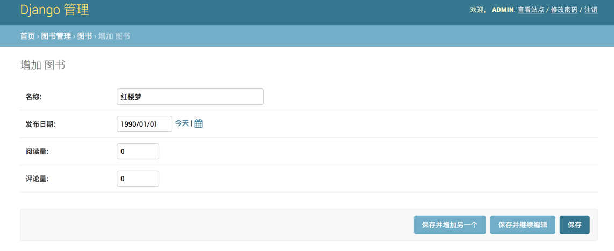
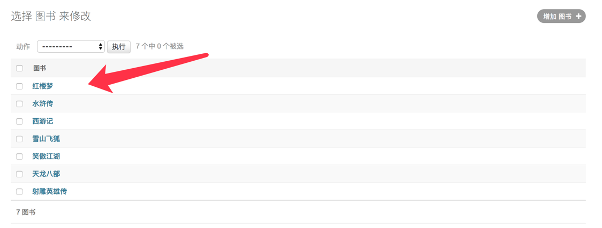
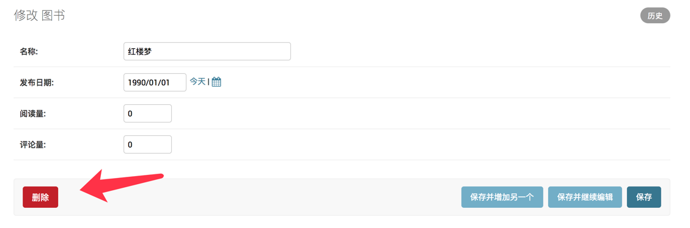
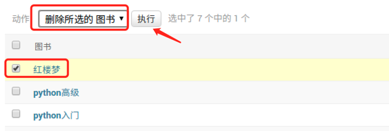

<!DOCTYPE HTML>
<html lang="zh-tw" >
    <!-- Start book django项目 -->
    <head>
        <!-- head:start -->
        <meta charset="UTF-8">
        <meta http-equiv="X-UA-Compatible" content="IE=edge" />
        <title>Admin站点 | django项目</title>
        <meta content="text/html; charset=utf-8" http-equiv="Content-Type">
        <meta name="description" content="">
        <meta name="generator" content="GitBook 2.6.7">
        
        
        <meta name="HandheldFriendly" content="true"/>
        <meta name="viewport" content="width=device-width, initial-scale=1, user-scalable=no">
        <meta name="apple-mobile-web-app-capable" content="yes">
        <meta name="apple-mobile-web-app-status-bar-style" content="black">
        <link rel="apple-touch-icon-precomposed" sizes="152x152" href="../gitbook/images/apple-touch-icon-precomposed-152.png">
        <link rel="shortcut icon" href="../gitbook/images/favicon.ico" type="image/x-icon">
        
    <link rel="stylesheet" href="../gitbook/style.css">
    
        
        <link rel="stylesheet" href="../gitbook/plugins/gitbook-plugin-toggle-chapters/toggle.css">
        
    
        
        <link rel="stylesheet" href="../gitbook/plugins/gitbook-plugin-splitter/splitter.css">
        
    
        
        <link rel="stylesheet" href="../gitbook/plugins/gitbook-plugin-emphasize/plugin.css">
        
    
        
        <link rel="stylesheet" href="../gitbook/plugins/gitbook-plugin-fontsettings/website.css">
        
    
        
        <link rel="stylesheet" href="../gitbook/plugins/gitbook-plugin-highlight/website.css">
        
    
    

        
    
    
    <link rel="next" href="../03-day/adminsite/list.html" />
    
    
    <link rel="prev" href="../03-day/t.html" />
    

        <!-- head:end -->
    </head>
    <body>
        <!-- body:start -->
        
    <div class="book"
        data-level="3.9"
        data-chapter-title="Admin站点"
        data-filepath="03-day/adminsite.md"
        data-basepath=".."
        data-revision="Fri Sep 21 2018 22:01:40 GMT+0800 (中国标准时间)"
        data-innerlanguage="">
    

<div class="book-summary">
    <nav role="navigation">
        <ul class="summary">
            
            
            
            

            

            
    
        <li class="chapter " data-level="0" data-path="index.html">
            
                
                    <a href="../index.html">
                
                        <i class="fa fa-check"></i>
                        
                        Python Web 框架要点
                    </a>
            
            
        </li>
    
        <li class="chapter " data-level="1" data-path="01-day.html">
            
                
                    <a href="../01-day.html">
                
                        <i class="fa fa-check"></i>
                        
                            <b>1.</b>
                        
                        Django流程
                    </a>
            
            
            <ul class="articles">
                
    
        <li class="chapter " data-level="1.1" data-path="01-day/django.html">
            
                
                    <a href="../01-day/django.html">
                
                        <i class="fa fa-check"></i>
                        
                            <b>1.1.</b>
                        
                        Django介绍
                    </a>
            
            
        </li>
    
        <li class="chapter " data-level="1.2" data-path="01-day/env.html">
            
                
                    <a href="../01-day/env.html">
                
                        <i class="fa fa-check"></i>
                        
                            <b>1.2.</b>
                        
                        环境安装
                    </a>
            
            
        </li>
    
        <li class="chapter " data-level="1.3" data-path="01-day/project.html">
            
                
                    <a href="../01-day/project.html">
                
                        <i class="fa fa-check"></i>
                        
                            <b>1.3.</b>
                        
                        创建Django项目
                    </a>
            
            
            <ul class="articles">
                
    
        <li class="chapter " data-level="1.3.1" data-path="01-day/project/pro.html">
            
                
                    <a href="../01-day/project/pro.html">
                
                        <i class="fa fa-check"></i>
                        
                            <b>1.3.1.</b>
                        
                        创建工程
                    </a>
            
            
        </li>
    
        <li class="chapter " data-level="1.3.2" data-path="01-day/project/app.html">
            
                
                    <a href="../01-day/project/app.html">
                
                        <i class="fa fa-check"></i>
                        
                            <b>1.3.2.</b>
                        
                        创建子应用
                    </a>
            
            
        </li>
    

            </ul>
            
        </li>
    
        <li class="chapter " data-level="1.4" data-path="01-day/model.html">
            
                
                    <a href="../01-day/model.html">
                
                        <i class="fa fa-check"></i>
                        
                            <b>1.4.</b>
                        
                        模型
                    </a>
            
            
        </li>
    
        <li class="chapter " data-level="1.5" data-path="01-day/site.html">
            
                
                    <a href="../01-day/site.html">
                
                        <i class="fa fa-check"></i>
                        
                            <b>1.5.</b>
                        
                        站点管理
                    </a>
            
            
        </li>
    
        <li class="chapter " data-level="1.6" data-path="01-day/view.html">
            
                
                    <a href="../01-day/view.html">
                
                        <i class="fa fa-check"></i>
                        
                            <b>1.6.</b>
                        
                        视图和URL
                    </a>
            
            
        </li>
    
        <li class="chapter " data-level="1.7" data-path="01-day/viewurl-flow.html">
            
                
                    <a href="../01-day/viewurl-flow.html">
                
                        <i class="fa fa-check"></i>
                        
                            <b>1.7.</b>
                        
                        总结View和URL匹配流程
                    </a>
            
            
        </li>
    
        <li class="chapter " data-level="1.8" data-path="01-day/template.html">
            
                
                    <a href="../01-day/template.html">
                
                        <i class="fa fa-check"></i>
                        
                            <b>1.8.</b>
                        
                        模板
                    </a>
            
            
        </li>
    
        <li class="chapter " data-level="1.9" data-path="01-day/viewtemplate-flow.html">
            
                
                    <a href="../01-day/viewtemplate-flow.html">
                
                        <i class="fa fa-check"></i>
                        
                            <b>1.9.</b>
                        
                        总结View-Templates流程
                    </a>
            
            
        </li>
    
        <li class="chapter " data-level="1.10" data-path="01-day/case.html">
            
                
                    <a href="../01-day/case.html">
                
                        <i class="fa fa-check"></i>
                        
                            <b>1.10.</b>
                        
                        案例实现
                    </a>
            
            
        </li>
    
        <li class="chapter " data-level="1.11" data-path="01-day/file.html">
            
                
                    <a href="../01-day/file.html">
                
                        <i class="fa fa-check"></i>
                        
                            <b>1.11.</b>
                        
                        配置文件和静态文件
                    </a>
            
            
            <ul class="articles">
                
    
        <li class="chapter " data-level="1.11.1" data-path="01-day/file/settings.html">
            
                
                    <a href="../01-day/file/settings.html">
                
                        <i class="fa fa-check"></i>
                        
                            <b>1.11.1.</b>
                        
                        settings配置文件
                    </a>
            
            
        </li>
    
        <li class="chapter " data-level="1.11.2" data-path="01-day/file/static.html">
            
                
                    <a href="../01-day/file/static.html">
                
                        <i class="fa fa-check"></i>
                        
                            <b>1.11.2.</b>
                        
                        静态文件
                    </a>
            
            
        </li>
    
        <li class="chapter " data-level="1.11.3" data-path="01-day/file/app.html">
            
                
                    <a href="../01-day/file/app.html">
                
                        <i class="fa fa-check"></i>
                        
                            <b>1.11.3.</b>
                        
                        App应用配置
                    </a>
            
            
        </li>
    

            </ul>
            
        </li>
    

            </ul>
            
        </li>
    
        <li class="chapter " data-level="2" data-path="02-day.html">
            
                
                    <a href="../02-day.html">
                
                        <i class="fa fa-check"></i>
                        
                            <b>2.</b>
                        
                        模型
                    </a>
            
            
            <ul class="articles">
                
    
        <li class="chapter " data-level="2.1" data-path="02-day/orm.html">
            
                
                    <a href="../02-day/orm.html">
                
                        <i class="fa fa-check"></i>
                        
                            <b>2.1.</b>
                        
                        MVT图解
                    </a>
            
            
        </li>
    
        <li class="chapter " data-level="2.2" data-path="02-day/prepare.html">
            
                
                    <a href="../02-day/prepare.html">
                
                        <i class="fa fa-check"></i>
                        
                            <b>2.2.</b>
                        
                        项目准备
                    </a>
            
            
        </li>
    
        <li class="chapter " data-level="2.3" data-path="02-day/configure.html">
            
                
                    <a href="../02-day/configure.html">
                
                        <i class="fa fa-check"></i>
                        
                            <b>2.3.</b>
                        
                        配置
                    </a>
            
            
        </li>
    
        <li class="chapter " data-level="2.4" data-path="02-day/model.html">
            
                
                    <a href="../02-day/model.html">
                
                        <i class="fa fa-check"></i>
                        
                            <b>2.4.</b>
                        
                        定义模型类
                    </a>
            
            
        </li>
    
        <li class="chapter " data-level="2.5" data-path="02-day/shell.html">
            
                
                    <a href="../02-day/shell.html">
                
                        <i class="fa fa-check"></i>
                        
                            <b>2.5.</b>
                        
                        shell工具
                    </a>
            
            
        </li>
    
        <li class="chapter " data-level="2.6" data-path="02-day/operation.html">
            
                
                    <a href="../02-day/operation.html">
                
                        <i class="fa fa-check"></i>
                        
                            <b>2.6.</b>
                        
                        数据库操作
                    </a>
            
            
        </li>
    
        <li class="chapter " data-level="2.7" data-path="02-day/select.html">
            
                
                    <a href="../02-day/select.html">
                
                        <i class="fa fa-check"></i>
                        
                            <b>2.7.</b>
                        
                        查询
                    </a>
            
            
            <ul class="articles">
                
    
        <li class="chapter " data-level="2.7.1" data-path="02-day/select/base.html">
            
                
                    <a href="../02-day/select/base.html">
                
                        <i class="fa fa-check"></i>
                        
                            <b>2.7.1.</b>
                        
                        基础条件查询
                    </a>
            
            
        </li>
    
        <li class="chapter " data-level="2.7.2" data-path="02-day/select/fq.html">
            
                
                    <a href="../02-day/select/fq.html">
                
                        <i class="fa fa-check"></i>
                        
                            <b>2.7.2.</b>
                        
                        F和Q对象
                    </a>
            
            
        </li>
    
        <li class="chapter " data-level="2.7.3" data-path="02-day/select/aggregate.html">
            
                
                    <a href="../02-day/select/aggregate.html">
                
                        <i class="fa fa-check"></i>
                        
                            <b>2.7.3.</b>
                        
                        聚合函数和排序函数
                    </a>
            
            
        </li>
    
        <li class="chapter " data-level="2.7.4" data-path="02-day/select/join.html">
            
                
                    <a href="../02-day/select/join.html">
                
                        <i class="fa fa-check"></i>
                        
                            <b>2.7.4.</b>
                        
                        关联查询
                    </a>
            
            
        </li>
    
        <li class="chapter " data-level="2.7.5" data-path="02-day/select/queryset.html">
            
                
                    <a href="../02-day/select/queryset.html">
                
                        <i class="fa fa-check"></i>
                        
                            <b>2.7.5.</b>
                        
                        查询集QuerySet
                    </a>
            
            
        </li>
    

            </ul>
            
        </li>
    

            </ul>
            
        </li>
    
        <li class="chapter " data-level="3" data-path="03-day.html">
            
                
                    <a href="../03-day.html">
                
                        <i class="fa fa-check"></i>
                        
                            <b>3.</b>
                        
                        视图
                    </a>
            
            
            <ul class="articles">
                
    
        <li class="chapter " data-level="3.1" data-path="03-day/intro.html">
            
                
                    <a href="../03-day/intro.html">
                
                        <i class="fa fa-check"></i>
                        
                            <b>3.1.</b>
                        
                        视图介绍和项目准备
                    </a>
            
            
        </li>
    
        <li class="chapter " data-level="3.2" data-path="03-day/urlconf.html">
            
                
                    <a href="../03-day/urlconf.html">
                
                        <i class="fa fa-check"></i>
                        
                            <b>3.2.</b>
                        
                        URLconf
                    </a>
            
            
        </li>
    
        <li class="chapter " data-level="3.3" data-path="03-day/namespace.html">
            
                
                    <a href="../03-day/namespace.html">
                
                        <i class="fa fa-check"></i>
                        
                            <b>3.3.</b>
                        
                        路由命名与reverse反解析
                    </a>
            
            
        </li>
    
        <li class="chapter " data-level="3.4" data-path="03-day/request.html">
            
                
                    <a href="../03-day/request.html">
                
                        <i class="fa fa-check"></i>
                        
                            <b>3.4.</b>
                        
                        HttpRequest对象
                    </a>
            
            
        </li>
    
        <li class="chapter " data-level="3.5" data-path="03-day/response.html">
            
                
                    <a href="../03-day/response.html">
                
                        <i class="fa fa-check"></i>
                        
                            <b>3.5.</b>
                        
                        HttpResponse对象
                    </a>
            
            
        </li>
    
        <li class="chapter " data-level="3.6" data-path="03-day/status.html">
            
                
                    <a href="../03-day/status.html">
                
                        <i class="fa fa-check"></i>
                        
                            <b>3.6.</b>
                        
                        状态保持
                    </a>
            
            
            <ul class="articles">
                
    
        <li class="chapter " data-level="3.6.1" data-path="03-day/status/cookie.html">
            
                
                    <a href="../03-day/status/cookie.html">
                
                        <i class="fa fa-check"></i>
                        
                            <b>3.6.1.</b>
                        
                        Cookie
                    </a>
            
            
        </li>
    
        <li class="chapter " data-level="3.6.2" data-path="03-day/status/session.html">
            
                
                    <a href="../03-day/status/session.html">
                
                        <i class="fa fa-check"></i>
                        
                            <b>3.6.2.</b>
                        
                        Session
                    </a>
            
            
        </li>
    

            </ul>
            
        </li>
    
        <li class="chapter " data-level="3.7" data-path="03-day/middleclassview.html">
            
                
                    <a href="../03-day/middleclassview.html">
                
                        <i class="fa fa-check"></i>
                        
                            <b>3.7.</b>
                        
                        类视图与中间件
                    </a>
            
            
            <ul class="articles">
                
    
        <li class="chapter " data-level="3.7.1" data-path="03-day/middleclassview/classview.html">
            
                
                    <a href="../03-day/middleclassview/classview.html">
                
                        <i class="fa fa-check"></i>
                        
                            <b>3.7.1.</b>
                        
                        类视图
                    </a>
            
            
            <ul class="articles">
                
    
        <li class="chapter " data-level="3.7.1.1" data-path="03-day/middleclassview/classview/use.html">
            
                
                    <a href="../03-day/middleclassview/classview/use.html">
                
                        <i class="fa fa-check"></i>
                        
                            <b>3.7.1.1.</b>
                        
                        类视图使用
                    </a>
            
            
        </li>
    
        <li class="chapter " data-level="3.7.1.2" data-path="03-day/middleclassview/classview/decorator.html">
            
                
                    <a href="../03-day/middleclassview/classview/decorator.html">
                
                        <i class="fa fa-check"></i>
                        
                            <b>3.7.1.2.</b>
                        
                        类视图使用装饰器
                    </a>
            
            
        </li>
    

            </ul>
            
        </li>
    
        <li class="chapter " data-level="3.7.2" data-path="03-day/middleclassview/middle.html">
            
                
                    <a href="../03-day/middleclassview/middle.html">
                
                        <i class="fa fa-check"></i>
                        
                            <b>3.7.2.</b>
                        
                        中间件
                    </a>
            
            
        </li>
    

            </ul>
            
        </li>
    
        <li class="chapter " data-level="3.8" data-path="03-day/t.html">
            
                
                    <a href="../03-day/t.html">
                
                        <i class="fa fa-check"></i>
                        
                            <b>3.8.</b>
                        
                        模板
                    </a>
            
            
        </li>
    
        <li class="chapter active" data-level="3.9" data-path="03-day/adminsite.html">
            
                
                    <a href="../03-day/adminsite.html">
                
                        <i class="fa fa-check"></i>
                        
                            <b>3.9.</b>
                        
                        Admin站点
                    </a>
            
            
            <ul class="articles">
                
    
        <li class="chapter " data-level="3.9.1" data-path="03-day/adminsite/list.html">
            
                
                    <a href="../03-day/adminsite/list.html">
                
                        <i class="fa fa-check"></i>
                        
                            <b>3.9.1.</b>
                        
                        列表页展示
                    </a>
            
            
        </li>
    
        <li class="chapter " data-level="3.9.2" data-path="03-day/adminsite/edit.html">
            
                
                    <a href="../03-day/adminsite/edit.html">
                
                        <i class="fa fa-check"></i>
                        
                            <b>3.9.2.</b>
                        
                        调整编辑页展示
                    </a>
            
            
        </li>
    
        <li class="chapter " data-level="3.9.3" data-path="03-day/adminsite/template.html">
            
                
                    <a href="../03-day/adminsite/template.html">
                
                        <i class="fa fa-check"></i>
                        
                            <b>3.9.3.</b>
                        
                        调整站点信息
                    </a>
            
            
        </li>
    
        <li class="chapter " data-level="3.9.4" data-path="03-day/adminsite/upload.html">
            
                
                    <a href="../03-day/adminsite/upload.html">
                
                        <i class="fa fa-check"></i>
                        
                            <b>3.9.4.</b>
                        
                        上传图片
                    </a>
            
            
        </li>
    

            </ul>
            
        </li>
    

            </ul>
            
        </li>
    
        <li class="chapter " data-level="4" data-path="04-day.html">
            
                
                    <a href="../04-day.html">
                
                        <i class="fa fa-check"></i>
                        
                            <b>4.</b>
                        
                        Django REST framework流程
                    </a>
            
            
            <ul class="articles">
                
    
        <li class="chapter " data-level="4.1" data-path="04-day/restful.html">
            
                
                    <a href="../04-day/restful.html">
                
                        <i class="fa fa-check"></i>
                        
                            <b>4.1.</b>
                        
                        RESTfull
                    </a>
            
            
            <ul class="articles">
                
    
        <li class="chapter " data-level="4.1.1" data-path="04-day/restful/mode.html">
            
                
                    <a href="../04-day/restful/mode.html">
                
                        <i class="fa fa-check"></i>
                        
                            <b>4.1.1.</b>
                        
                        Web应用模式
                    </a>
            
            
        </li>
    
        <li class="chapter " data-level="4.1.2" data-path="04-day/restful/restful.html">
            
                
                    <a href="../04-day/restful/restful.html">
                
                        <i class="fa fa-check"></i>
                        
                            <b>4.1.2.</b>
                        
                        认识RESTful
                    </a>
            
            
        </li>
    
        <li class="chapter " data-level="4.1.3" data-path="04-day/restful/method.html">
            
                
                    <a href="../04-day/restful/method.html">
                
                        <i class="fa fa-check"></i>
                        
                            <b>4.1.3.</b>
                        
                        RESTful设计方法
                    </a>
            
            
            <ul class="articles">
                
    
        <li class="chapter " data-level="4.1.3.1" data-path="04-day/restful/method/request.html">
            
                
                    <a href="../04-day/restful/method/request.html">
                
                        <i class="fa fa-check"></i>
                        
                            <b>4.1.3.1.</b>
                        
                        请求相关
                    </a>
            
            
        </li>
    
        <li class="chapter " data-level="4.1.3.2" data-path="04-day/restful/method/response.html">
            
                
                    <a href="../04-day/restful/method/response.html">
                
                        <i class="fa fa-check"></i>
                        
                            <b>4.1.3.2.</b>
                        
                        响应相关
                    </a>
            
            
        </li>
    

            </ul>
            
        </li>
    
        <li class="chapter " data-level="4.1.4" data-path="04-day/restful/prepare.html">
            
                
                    <a href="../04-day/restful/prepare.html">
                
                        <i class="fa fa-check"></i>
                        
                            <b>4.1.4.</b>
                        
                        项目准备
                    </a>
            
            
        </li>
    
        <li class="chapter " data-level="4.1.5" data-path="04-day/restful/django.html">
            
                
                    <a href="../04-day/restful/django.html">
                
                        <i class="fa fa-check"></i>
                        
                            <b>4.1.5.</b>
                        
                        使用Django开发REST 接口
                    </a>
            
            
        </li>
    
        <li class="chapter " data-level="4.1.6" data-path="04-day/restful/task.html">
            
                
                    <a href="../04-day/restful/task.html">
                
                        <i class="fa fa-check"></i>
                        
                            <b>4.1.6.</b>
                        
                        明确REST接口开发的核心任务
                    </a>
            
            
        </li>
    

            </ul>
            
        </li>
    
        <li class="chapter " data-level="4.2" data-path="04-day/restful/djangorestful-framework.html">
            
                
                    <a href="../04-day/restful/djangorestful-framework.html">
                
                        <i class="fa fa-check"></i>
                        
                            <b>4.2.</b>
                        
                        Django REST framework
                    </a>
            
            
            <ul class="articles">
                
    
        <li class="chapter " data-level="4.2.1" data-path="04-day/restful/djangorestful-framework/config.html">
            
                
                    <a href="../04-day/restful/djangorestful-framework/config.html">
                
                        <i class="fa fa-check"></i>
                        
                            <b>4.2.1.</b>
                        
                        环境安装与配置
                    </a>
            
            
        </li>
    
        <li class="chapter " data-level="4.2.2" data-path="04-day/restful/djangorestful-framework/like.html">
            
                
                    <a href="../04-day/restful/djangorestful-framework/like.html">
                
                        <i class="fa fa-check"></i>
                        
                            <b>4.2.2.</b>
                        
                        Django REST framework魅力
                    </a>
            
            
        </li>
    

            </ul>
            
        </li>
    

            </ul>
            
        </li>
    
        <li class="chapter " data-level="5" data-path="05-day.html">
            
                
                    <a href="../05-day.html">
                
                        <i class="fa fa-check"></i>
                        
                            <b>5.</b>
                        
                        序列化和反序列化
                    </a>
            
            
            <ul class="articles">
                
    
        <li class="chapter " data-level="5.1" data-path="05-day/modify.html">
            
                
                    <a href="../05-day/modify.html">
                
                        <i class="fa fa-check"></i>
                        
                            <b>5.1.</b>
                        
                        Serializer字段和选项
                    </a>
            
            
        </li>
    
        <li class="chapter " data-level="5.2" data-path="05-day/serializer.html">
            
                
                    <a href="../05-day/serializer.html">
                
                        <i class="fa fa-check"></i>
                        
                            <b>5.2.</b>
                        
                        序列化使用
                    </a>
            
            
            <ul class="articles">
                
    
        <li class="chapter " data-level="5.2.1" data-path="05-day/serializer/base.html">
            
                
                    <a href="../05-day/serializer/base.html">
                
                        <i class="fa fa-check"></i>
                        
                            <b>5.2.1.</b>
                        
                        基本使用
                    </a>
            
            
        </li>
    
        <li class="chapter " data-level="5.2.2" data-path="05-day/serializer/assoc.html">
            
                
                    <a href="../05-day/serializer/assoc.html">
                
                        <i class="fa fa-check"></i>
                        
                            <b>5.2.2.</b>
                        
                        关联对象嵌套序列化
                    </a>
            
            
        </li>
    

            </ul>
            
        </li>
    
        <li class="chapter " data-level="5.3" data-path="05-day/un-serializer.html">
            
                
                    <a href="../05-day/un-serializer.html">
                
                        <i class="fa fa-check"></i>
                        
                            <b>5.3.</b>
                        
                        反序列化使用
                    </a>
            
            
            <ul class="articles">
                
    
        <li class="chapter " data-level="5.3.1" data-path="05-day/un-serializer/validate.html">
            
                
                    <a href="../05-day/un-serializer/validate.html">
                
                        <i class="fa fa-check"></i>
                        
                            <b>5.3.1.</b>
                        
                        验证
                    </a>
            
            
            <ul class="articles">
                
    
        <li class="chapter " data-level="5.3.1.1" data-path="05-day/un-serializer/validate/validatefieldname.html">
            
                
                    <a href="../05-day/un-serializer/validate/validatefieldname.html">
                
                        <i class="fa fa-check"></i>
                        
                            <b>5.3.1.1.</b>
                        
                        validate\_fieldname
                    </a>
            
            
        </li>
    
        <li class="chapter " data-level="5.3.1.2" data-path="05-day/un-serializer/validate/validate.html">
            
                
                    <a href="../05-day/un-serializer/validate/validate.html">
                
                        <i class="fa fa-check"></i>
                        
                            <b>5.3.1.2.</b>
                        
                        validate
                    </a>
            
            
        </li>
    
        <li class="chapter " data-level="5.3.1.3" data-path="05-day/un-serializer/validate/validators.html">
            
                
                    <a href="../05-day/un-serializer/validate/validators.html">
                
                        <i class="fa fa-check"></i>
                        
                            <b>5.3.1.3.</b>
                        
                        validators
                    </a>
            
            
        </li>
    

            </ul>
            
        </li>
    
        <li class="chapter " data-level="5.3.2" data-path="05-day/un-serializer/save.html">
            
                
                    <a href="../05-day/un-serializer/save.html">
                
                        <i class="fa fa-check"></i>
                        
                            <b>5.3.2.</b>
                        
                        保存
                    </a>
            
            
        </li>
    

            </ul>
            
        </li>
    
        <li class="chapter " data-level="5.4" data-path="05-day/modelserializer.html">
            
                
                    <a href="../05-day/modelserializer.html">
                
                        <i class="fa fa-check"></i>
                        
                            <b>5.4.</b>
                        
                        模型类序列化器ModelSerializer
                    </a>
            
            
        </li>
    

            </ul>
            
        </li>
    
        <li class="chapter " data-level="6" data-path="06-day.html">
            
                
                    <a href="../06-day.html">
                
                        <i class="fa fa-check"></i>
                        
                            <b>6.</b>
                        
                        视图
                    </a>
            
            
            <ul class="articles">
                
    
        <li class="chapter " data-level="6.1" data-path="06-day/view.html">
            
                
                    <a href="../06-day/view.html">
                
                        <i class="fa fa-check"></i>
                        
                            <b>6.1.</b>
                        
                        视图
                    </a>
            
            
            <ul class="articles">
                
    
        <li class="chapter " data-level="6.1.1" data-path="06-day/view/requestresponse.html">
            
                
                    <a href="../06-day/view/requestresponse.html">
                
                        <i class="fa fa-check"></i>
                        
                            <b>6.1.1.</b>
                        
                        Request 与 Response
                    </a>
            
            
            <ul class="articles">
                
    
        <li class="chapter " data-level="6.1.1.1" data-path="06-day/view/requestresponse/request.html">
            
                
                    <a href="../06-day/view/requestresponse/request.html">
                
                        <i class="fa fa-check"></i>
                        
                            <b>6.1.1.1.</b>
                        
                        Request
                    </a>
            
            
        </li>
    
        <li class="chapter " data-level="6.1.1.2" data-path="06-day/view/requestresponse/response.html">
            
                
                    <a href="../06-day/view/requestresponse/response.html">
                
                        <i class="fa fa-check"></i>
                        
                            <b>6.1.1.2.</b>
                        
                        Response
                    </a>
            
            
        </li>
    

            </ul>
            
        </li>
    
        <li class="chapter " data-level="6.1.2" data-path="06-day/view/view.html">
            
                
                    <a href="../06-day/view/view.html">
                
                        <i class="fa fa-check"></i>
                        
                            <b>6.1.2.</b>
                        
                        视图
                    </a>
            
            
            <ul class="articles">
                
    
        <li class="chapter " data-level="6.1.2.1" data-path="06-day/view/view/apiview.html">
            
                
                    <a href="../06-day/view/view/apiview.html">
                
                        <i class="fa fa-check"></i>
                        
                            <b>6.1.2.1.</b>
                        
                        APIView\(一级\)
                    </a>
            
            
        </li>
    
        <li class="chapter " data-level="6.1.2.2" data-path="06-day/view/view/genericapiview.html">
            
                
                    <a href="../06-day/view/view/genericapiview.html">
                
                        <i class="fa fa-check"></i>
                        
                            <b>6.1.2.2.</b>
                        
                        GenericAPIView\(二级\)
                    </a>
            
            
        </li>
    
        <li class="chapter " data-level="6.1.2.3" data-path="06-day/view/view/mixin.html">
            
                
                    <a href="../06-day/view/view/mixin.html">
                
                        <i class="fa fa-check"></i>
                        
                            <b>6.1.2.3.</b>
                        
                        Mixin
                    </a>
            
            
        </li>
    
        <li class="chapter " data-level="6.1.2.4" data-path="06-day/view/view/subclass.html">
            
                
                    <a href="../06-day/view/view/subclass.html">
                
                        <i class="fa fa-check"></i>
                        
                            <b>6.1.2.4.</b>
                        
                        子类视图\(三级\)
                    </a>
            
            
        </li>
    

            </ul>
            
        </li>
    
        <li class="chapter " data-level="6.1.3" data-path="06-day/view/viewset.html">
            
                
                    <a href="../06-day/view/viewset.html">
                
                        <i class="fa fa-check"></i>
                        
                            <b>6.1.3.</b>
                        
                        视图集ViewSet
                    </a>
            
            
            <ul class="articles">
                
    
        <li class="chapter " data-level="6.1.3.1" data-path="06-day/view/viewset/viewset.html">
            
                
                    <a href="../06-day/view/viewset/viewset.html">
                
                        <i class="fa fa-check"></i>
                        
                            <b>6.1.3.1.</b>
                        
                        ViewSet
                    </a>
            
            
        </li>
    
        <li class="chapter " data-level="6.1.3.2" data-path="06-day/view/viewset/genericviewset.html">
            
                
                    <a href="../06-day/view/viewset/genericviewset.html">
                
                        <i class="fa fa-check"></i>
                        
                            <b>6.1.3.2.</b>
                        
                        GenericViewSet
                    </a>
            
            
        </li>
    
        <li class="chapter " data-level="6.1.3.3" data-path="06-day/view/viewset/modelviewset.html">
            
                
                    <a href="../06-day/view/viewset/modelviewset.html">
                
                        <i class="fa fa-check"></i>
                        
                            <b>6.1.3.3.</b>
                        
                        ModelViewSet
                    </a>
            
            
        </li>
    
        <li class="chapter " data-level="6.1.3.4" data-path="06-day/view/viewset/readonlymodelviewset.html">
            
                
                    <a href="../06-day/view/viewset/readonlymodelviewset.html">
                
                        <i class="fa fa-check"></i>
                        
                            <b>6.1.3.4.</b>
                        
                        ReadOnlyModelViewSet
                    </a>
            
            
        </li>
    

            </ul>
            
        </li>
    
        <li class="chapter " data-level="6.1.4" data-path="06-day/view/router.html">
            
                
                    <a href="../06-day/view/router.html">
                
                        <i class="fa fa-check"></i>
                        
                            <b>6.1.4.</b>
                        
                        路由Router
                    </a>
            
            
        </li>
    

            </ul>
            
        </li>
    
        <li class="chapter " data-level="6.2" data-path="06-day/other.html">
            
                
                    <a href="../06-day/other.html">
                
                        <i class="fa fa-check"></i>
                        
                            <b>6.2.</b>
                        
                        其他功能
                    </a>
            
            
            <ul class="articles">
                
    
        <li class="chapter " data-level="6.2.1" data-path="06-day/other/authentication.html">
            
                
                    <a href="../06-day/other/authentication.html">
                
                        <i class="fa fa-check"></i>
                        
                            <b>6.2.1.</b>
                        
                        认证Authentication
                    </a>
            
            
        </li>
    
        <li class="chapter " data-level="6.2.2" data-path="06-day/other/quan-xian-permissions.html">
            
                
                    <a href="../06-day/other/quan-xian-permissions.html">
                
                        <i class="fa fa-check"></i>
                        
                            <b>6.2.2.</b>
                        
                        权限Permissions
                    </a>
            
            
        </li>
    
        <li class="chapter " data-level="6.2.3" data-path="06-day/other/throttling.html">
            
                
                    <a href="../06-day/other/throttling.html">
                
                        <i class="fa fa-check"></i>
                        
                            <b>6.2.3.</b>
                        
                        限流Throttling
                    </a>
            
            
        </li>
    
        <li class="chapter " data-level="6.2.4" data-path="06-day/other/filtering.html">
            
                
                    <a href="../06-day/other/filtering.html">
                
                        <i class="fa fa-check"></i>
                        
                            <b>6.2.4.</b>
                        
                        过滤Filtering
                    </a>
            
            
        </li>
    
        <li class="chapter " data-level="6.2.5" data-path="06-day/other/order.html">
            
                
                    <a href="../06-day/other/order.html">
                
                        <i class="fa fa-check"></i>
                        
                            <b>6.2.5.</b>
                        
                        排序OrderingFilter
                    </a>
            
            
        </li>
    
        <li class="chapter " data-level="6.2.6" data-path="06-day/other/pagination.html">
            
                
                    <a href="../06-day/other/pagination.html">
                
                        <i class="fa fa-check"></i>
                        
                            <b>6.2.6.</b>
                        
                        分页Pagination
                    </a>
            
            
        </li>
    
        <li class="chapter " data-level="6.2.7" data-path="06-day/other/exceptions.html">
            
                
                    <a href="../06-day/other/exceptions.html">
                
                        <i class="fa fa-check"></i>
                        
                            <b>6.2.7.</b>
                        
                        异常处理 Exceptions
                    </a>
            
            
        </li>
    
        <li class="chapter " data-level="6.2.8" data-path="06-day/other/coreapi.html">
            
                
                    <a href="../06-day/other/coreapi.html">
                
                        <i class="fa fa-check"></i>
                        
                            <b>6.2.8.</b>
                        
                        接口文档API
                    </a>
            
            
        </li>
    

            </ul>
            
        </li>
    

            </ul>
            
        </li>
    


            
            <li class="divider"></li>
            <li>
                <a href="https://www.gitbook.com" target="blank" class="gitbook-link">
                    本書使用 GitBook 釋出
                </a>
            </li>
            
        </ul>
    </nav>
</div>

    <div class="book-body">
        <div class="body-inner">
            <div class="book-header" role="navigation">
    <!-- Actions Left -->
    

    <!-- Title -->
    <h1>
        <i class="fa fa-circle-o-notch fa-spin"></i>
        <a href="../" >django项目</a>
    </h1>
</div>

            <div class="page-wrapper" tabindex="-1" role="main">
                <div class="page-inner">
                
                
                    <section class="normal" id="section-">
                    
                        <h1 id="admin&#x7AD9;&#x70B9;">Admin&#x7AD9;&#x70B9; </h1>
<p>&#x5047;&#x8BBE;&#x6211;&#x4EEC;&#x8981;&#x8BBE;&#x8BA1;&#x4E00;&#x4E2A;&#x65B0;&#x95FB;&#x7F51;&#x7AD9;&#xFF0C;&#x6211;&#x4EEC;&#x9700;&#x8981;&#x7F16;&#x5199;&#x5C55;&#x793A;&#x7ED9;&#x7528;&#x6237;&#x7684;&#x9875;&#x9762;&#xFF0C;&#x7F51;&#x9875;&#x4E0A;&#x5C55;&#x793A;&#x7684;&#x65B0;&#x95FB;&#x4FE1;&#x606F;&#x662F;&#x4ECE;&#x54EA;&#x91CC;&#x6765;&#x7684;&#x5462;&#xFF1F;<strong>&#x662F;&#x4ECE;&#x6570;&#x636E;&#x5E93;&#x4E2D;&#x67E5;&#x627E;&#x5230;&#x65B0;&#x95FB;&#x7684;&#x4FE1;&#x606F;&#xFF0C;&#x7136;&#x540E;&#x628A;&#x5B83;&#x5C55;&#x793A;&#x5728;&#x9875;&#x9762;&#x4E0A;</strong>&#x3002;&#x4F46;&#x662F;&#x6211;&#x4EEC;&#x7684;&#x7F51;&#x7AD9;&#x4E0A;&#x7684;&#x65B0;&#x95FB;&#x6BCF;&#x5929;&#x90FD;&#x8981;&#x66F4;&#x65B0;&#xFF0C;&#x8FD9;&#x5C31;&#x610F;&#x5473;&#x7740;&#x5BF9;&#x6570;&#x636E;&#x5E93;&#x7684;&#x589E;&#x3001;&#x5220;&#x3001;&#x6539;&#x3001;&#x67E5;&#x64CD;&#x4F5C;&#xFF0C;&#x90A3;&#x4E48;&#x6211;&#x4EEC;&#x9700;&#x8981;&#x6BCF;&#x5929;&#x5199;sql&#x8BED;&#x53E5;&#x64CD;&#x4F5C;&#x6570;&#x636E;&#x5E93;&#x5417;? &#x5982;&#x679C;&#x8FD9;&#x6837;&#x7684;&#x8BDD;&#xFF0C;&#x662F;&#x4E0D;&#x662F;&#x975E;&#x5E38;&#x7E41;&#x7410;&#xFF0C;&#x6240;&#x4EE5;&#x6211;&#x4EEC;&#x53EF;&#x4EE5;&#x8BBE;&#x8BA1;&#x4E00;&#x4E2A;&#x9875;&#x9762;&#xFF0C;&#x901A;&#x8FC7;&#x5BF9;&#x8FD9;&#x4E2A;&#x9875;&#x9762;&#x7684;&#x64CD;&#x4F5C;&#x6765;&#x5B9E;&#x73B0;&#x5BF9;&#x65B0;&#x95FB;&#x6570;&#x636E;&#x5E93;&#x7684;&#x589E;&#x5220;&#x6539;&#x67E5;&#x64CD;&#x4F5C;&#x3002;&#x90A3;&#x4E48;&#x95EE;&#x9898;&#x6765;&#x4E86;&#xFF0C;&#x8001;&#x677F;&#x8BF4;&#x6211;&#x4EEC;&#x9700;&#x8981;&#x5728;&#x5EFA;&#x7ACB;&#x4E00;&#x4E2A;&#x65B0;&#x7F51;&#x7AD9;&#xFF0C;&#x662F;&#x4E0D;&#x662F;&#x8FD8;&#x8981;&#x8BBE;&#x8BA1;&#x4E00;&#x4E2A;&#x9875;&#x9762;&#x6765;&#x5B9E;&#x73B0;&#x5BF9;&#x65B0;&#x7F51;&#x7AD9;&#x6570;&#x636E;&#x5E93;&#x7684;&#x589E;&#x5220;&#x6539;&#x67E5;&#x64CD;&#x4F5C;&#xFF0C;&#x4F46;&#x662F;&#x8FD9;&#x6837;&#x7684;&#x9875;&#x9762;&#x5177;&#x6709;&#x4E00;&#x4E2A;&#x5F88;&#x5927;&#x7684;&#x91CD;&#x590D;&#x6027;&#xFF0C;&#x90A3;&#x6709;&#x6CA1;&#x6709;&#x4E00;&#x79CD;&#x65B9;&#x6CD5;&#x80FD;&#x591F;&#x8BA9;&#x6211;&#x4EEC;&#x5F88;&#x5FEB;&#x7684;&#x751F;&#x6210;&#x7BA1;&#x7406;&#x6570;&#x636E;&#x5E93;&#x8868;&#x7684;&#x9875;&#x9762;&#x5462;&#xFF1F;<strong>&#x6709;&#xFF0C;&#x90A3;&#x5C31;&#x662F;&#x6211;&#x4EEC;&#x63A5;&#x4E0B;&#x6765;&#x8981;&#x7ED9;&#x5927;&#x5BB6;&#x8BB2;&#x7684;Django&#x7684;&#x540E;&#x53F0;&#x7BA1;&#x7406;</strong>&#x3002;Django&#x80FD;&#x591F;&#x6839;&#x636E;&#x5B9A;&#x4E49;&#x7684;&#x6A21;&#x578B;&#x7C7B;&#x81EA;&#x52A8;&#x5730;&#x751F;&#x6210;&#x7BA1;&#x7406;&#x9875;&#x9762;&#x3002;</p>
<p>&#x4F7F;&#x7528;Django&#x7684;&#x7BA1;&#x7406;&#x6A21;&#x5757;&#xFF0C;&#x9700;&#x8981;&#x6309;&#x7167;&#x5982;&#x4E0B;&#x6B65;&#x9AA4;&#x64CD;&#x4F5C;&#xFF1A;</p>
<ol>
<li>&#x7BA1;&#x7406;&#x754C;&#x9762;&#x672C;&#x5730;&#x5316;</li>
<li>&#x521B;&#x5EFA;&#x7BA1;&#x7406;&#x5458;</li>
<li>&#x6CE8;&#x518C;&#x6A21;&#x578B;&#x7C7B;</li>
<li>&#x81EA;&#x5B9A;&#x4E49;&#x7BA1;&#x7406;&#x9875;&#x9762;</li>
</ol>
<h2 id="1--&#x7BA1;&#x7406;&#x754C;&#x9762;&#x672C;&#x5730;&#x5316;">1 &#x7BA1;&#x7406;&#x754C;&#x9762;&#x672C;&#x5730;&#x5316; </h2>
<p>&#x5728;settings.py&#x4E2D;&#x8BBE;&#x7F6E;&#x8BED;&#x8A00;&#x548C;&#x65F6;&#x533A;</p>
<pre><code>#&#x8BBE;&#x7F6E;&#x4E2D;&#x6587;
LANGUAGE_CODE = &apos;zh-Hans&apos;
#&#x4E9A;&#x6D32;&#x4E0A;&#x6D77;&#x65F6;&#x533A;
TIME_ZONE = &apos;Asia/Shanghai&apos;
</code></pre><h2 id="2--&#x521B;&#x5EFA;&#x8D85;&#x7EA7;&#x7BA1;&#x7406;&#x5458;">2 &#x521B;&#x5EFA;&#x8D85;&#x7EA7;&#x7BA1;&#x7406;&#x5458; </h2>
<p>&#x521B;&#x5EFA;&#x7BA1;&#x7406;&#x5458;&#x7684;&#x547D;&#x4EE4;&#x5982;&#x4E0B;&#xFF0C;&#x6309;&#x63D0;&#x793A;&#x8F93;&#x5165;&#x7528;&#x6237;&#x540D;&#x3001;&#x90AE;&#x7BB1;&#x3001;&#x5BC6;&#x7801;&#x3002;</p>
<pre><code>python manage.py createsuperuser
</code></pre><p></p>
<p>&#x6253;&#x5F00;&#x6D4F;&#x89C8;&#x5668;&#xFF0C;&#x5728;&#x5730;&#x5740;&#x680F;&#x4E2D;&#x8F93;&#x5165;&#x5982;&#x4E0B;&#x5730;&#x5740;&#x540E;&#x56DE;&#x8F66;&#x3002;</p>
<pre><code>http://127.0.0.1:8000/admin/
</code></pre><p>&#x8F93;&#x5165;&#x524D;&#x9762;&#x521B;&#x5EFA;&#x7684;&#x7528;&#x6237;&#x540D;&#x3001;&#x5BC6;&#x7801;&#x5B8C;&#x6210;&#x767B;&#x5F55;&#x3002;</p>
<p></p>
<p>&#x767B;&#x5F55;&#x6210;&#x529F;&#x540E;&#x754C;&#x9762;&#x5982;&#x4E0B;&#xFF0C;&#x4F46;&#x662F;&#x5E76;&#x6CA1;&#x6709;&#x6211;&#x4EEC;&#x81EA;&#x5DF1;&#x5E94;&#x7528;&#x6A21;&#x578B;&#x7684;&#x5165;&#x53E3;&#xFF0C;&#x63A5;&#x4E0B;&#x6765;&#x8FDB;&#x884C;&#x7B2C;&#x4E09;&#x6B65;&#x64CD;&#x4F5C;&#x3002;</p>
<p></p>
<h2 id="3--&#x6CE8;&#x518C;&#x6A21;&#x578B;&#x7C7B;">3 &#x6CE8;&#x518C;&#x6A21;&#x578B;&#x7C7B; </h2>
<p>&#x767B;&#x5F55;&#x540E;&#x53F0;&#x7BA1;&#x7406;&#x540E;&#xFF0C;&#x9ED8;&#x8BA4;&#x6CA1;&#x6709;&#x6211;&#x4EEC;&#x521B;&#x5EFA;&#x7684;&#x5E94;&#x7528;&#x4E2D;&#x5B9A;&#x4E49;&#x7684;&#x6A21;&#x578B;&#x7C7B;&#xFF0C;&#x9700;&#x8981;&#x5728;&#x81EA;&#x5DF1;&#x5E94;&#x7528;&#x4E2D;&#x7684;admin.py&#x6587;&#x4EF6;&#x4E2D;&#x6CE8;&#x518C;&#xFF0C;&#x624D;&#x53EF;&#x4EE5;&#x5728;&#x540E;&#x53F0;&#x7BA1;&#x7406;&#x4E2D;&#x770B;&#x5230;&#xFF0C;&#x5E76;&#x8FDB;&#x884C;&#x589E;&#x5220;&#x6539;&#x67E5;&#x64CD;&#x4F5C;&#x3002;</p>
<p>&#x6253;&#x5F00;booktest/admin.py&#x6587;&#x4EF6;&#xFF0C;&#x7F16;&#x5199;&#x5982;&#x4E0B;&#x4EE3;&#x7801;&#xFF1A;</p>
<pre><code>from django.contrib import admin
#&#x5BFC;&#x5165;&#x6A21;&#x578B;
from book.models import BookInfo,PeopleInfo
# Register your models here.
#&#x6CE8;&#x518C;&#x4E66;&#x7C4D;&#x6A21;&#x578B;
admin.site.register(BookInfo)
#&#x6CE8;&#x518C;&#x4EBA;&#x7269;&#x6A21;&#x578B;
admin.site.register(PeopleInfo)
</code></pre><p>&#x5230;&#x6D4F;&#x89C8;&#x5668;&#x4E2D;&#x5237;&#x65B0;&#x9875;&#x9762;&#xFF0C;&#x53EF;&#x4EE5;&#x770B;&#x5230;&#x6A21;&#x578B;&#x7C7B;BookInfo&#x548C;PeopleInfo&#x7684;&#x7BA1;&#x7406;&#x4E86;&#x3002;</p>
<p></p>
<p>&#x70B9;&#x51FB;&#x7C7B;&#x540D;&#x79F0;&quot;BookInfo&quot;&#xFF08;&#x56FE;&#x4E66;&#xFF09;&#x53EF;&#x4EE5;&#x8FDB;&#x5165;&#x5217;&#x8868;&#x9875;&#xFF0C;&#x9ED8;&#x8BA4;&#x53EA;&#x6709;&#x4E00;&#x5217;&#x3002;</p>
<p></p>
<p>&#x5728;&#x5217;&#x8868;&#x9875;&#x4E2D;&#x70B9;&#x51FB;&quot;&#x589E;&#x52A0;&quot;&#x53EF;&#x4EE5;&#x8FDB;&#x5165;&#x589E;&#x52A0;&#x9875;&#xFF0C;Django&#x4F1A;&#x6839;&#x636E;&#x6A21;&#x578B;&#x7C7B;&#x7684;&#x4E0D;&#x540C;&#xFF0C;&#x751F;&#x6210;&#x4E0D;&#x540C;&#x7684;&#x8868;&#x5355;&#x63A7;&#x4EF6;&#xFF0C;&#x6309;&#x63D0;&#x793A;&#x586B;&#x5199;&#x8868;&#x5355;&#x5185;&#x5BB9;&#x540E;&#x70B9;&#x51FB;&quot;&#x4FDD;&#x5B58;&quot;&#xFF0C;&#x5B8C;&#x6210;&#x6570;&#x636E;&#x521B;&#x5EFA;&#xFF0C;&#x521B;&#x5EFA;&#x6210;&#x529F;&#x540E;&#x8FD4;&#x56DE;&#x5217;&#x8868;&#x9875;&#x3002;</p>
<p></p>
<p>&#x5728;&#x5217;&#x8868;&#x9875;&#x4E2D;&#x70B9;&#x51FB;&#x67D0;&#x884C;&#x7684;&#x7B2C;&#x4E00;&#x5217;&#x53EF;&#x4EE5;&#x8FDB;&#x5165;&#x4FEE;&#x6539;&#x9875;&#x3002;</p>
<p></p>
<p>&#x6309;&#x7167;&#x63D0;&#x793A;&#x8FDB;&#x884C;&#x5185;&#x5BB9;&#x7684;&#x4FEE;&#x6539;&#xFF0C;&#x4FEE;&#x6539;&#x6210;&#x529F;&#x540E;&#x8FDB;&#x5165;&#x5217;&#x8868;&#x9875;&#x3002;&#x5728;&#x4FEE;&#x6539;&#x9875;&#x70B9;&#x51FB;&#x201C;&#x5220;&#x9664;&#x201D;&#x53EF;&#x4EE5;&#x5220;&#x9664;&#x4E00;&#x9879;&#x3002;</p>
<p></p>
<p>&#x5220;&#x9664;&#xFF1A;&#x5728;&#x5217;&#x8868;&#x9875;&#x52FE;&#x9009;&#x60F3;&#x8981;&#x5220;&#x9664;&#x7684;&#x590D;&#x9009;&#x6846;&#xFF0C;&#x53EF;&#x4EE5;&#x5220;&#x9664;&#x591A;&#x9879;&#x3002;</p>
<p></p>
<p>&#x70B9;&#x51FB;&#x6267;&#x884C;&#x540E;&#x8FDB;&#x5165;&#x786E;&#x8BA4;&#x9875;&#x9762;&#xFF0C;&#x5220;&#x9664;&#x540E;&#x56DE;&#x6765;&#x5217;&#x8868;&#x9875;&#x9762;&#x3002;</p>
<p></p>
<h2 id="4--&#x5B9A;&#x4E49;&#x4E0E;&#x4F7F;&#x7528;admin&#x7BA1;&#x7406;&#x7C7B;">4 &#x5B9A;&#x4E49;&#x4E0E;&#x4F7F;&#x7528;Admin&#x7BA1;&#x7406;&#x7C7B; </h2>
<p>Django&#x63D0;&#x4F9B;&#x7684;Admin&#x7AD9;&#x70B9;&#x7684;&#x5C55;&#x793A;&#x6548;&#x679C;&#x53EF;&#x4EE5;&#x901A;&#x8FC7;&#x81EA;&#x5B9A;&#x4E49;<strong>ModelAdmin</strong>&#x7C7B;&#x6765;&#x8FDB;&#x884C;&#x63A7;&#x5236;&#x3002;</p>
<p>&#x5B9A;&#x4E49;&#x7BA1;&#x7406;&#x7C7B;&#x9700;&#x8981;&#x7EE7;&#x627F;&#x81EA;<strong>admin.ModelAdmin</strong>&#x7C7B;&#xFF0C;&#x5982;&#x4E0B;</p>
<pre><code>from django.contrib import admin

class BookInfoAdmin(admin.ModelAdmin):
    pass
</code></pre><p>&#x4F7F;&#x7528;&#x7BA1;&#x7406;&#x7C7B;&#x6709;&#x4E24;&#x79CD;&#x65B9;&#x5F0F;&#xFF1A;</p>
<ul>
<li><p>&#x6CE8;&#x518C;&#x53C2;&#x6570;</p>
<pre><code>admin.site.register(BookInfo,BookInfoAdmin)
</code></pre></li>
<li><p>&#x88C5;&#x9970;&#x5668;</p>
<pre><code>@admin.register(BookInfo)
class BookInfoAdmin(admin.ModelAdmin):
    pass
</code></pre></li>
</ul>

                    
                    </section>
                
                
                </div>
            </div>
        </div>

        
        <a href="../03-day/t.html" class="navigation navigation-prev " aria-label="Previous page: 模板"><i class="fa fa-angle-left"></i></a>
        
        
        <a href="../03-day/adminsite/list.html" class="navigation navigation-next " aria-label="Next page: 列表页展示"><i class="fa fa-angle-right"></i></a>
        
    </div>
</div>

        
<script src="../gitbook/app.js"></script>

    
    <script src="../gitbook/plugins/gitbook-plugin-toggle-chapters/toggle.js"></script>
    

    
    <script src="../gitbook/plugins/gitbook-plugin-splitter/splitter.js"></script>
    

    
    <script src="../gitbook/plugins/gitbook-plugin-fontsettings/fontsettings.js"></script>
    

    
    <script src="../gitbook/plugins/gitbook-plugin-sharing/buttons.js"></script>
    

<script>
require(["gitbook"], function(gitbook) {
    var config = {"fontsettings":{"family":"sans","size":2,"theme":"white"},"toggle-chapters":{},"splitter":{},"emphasize":{},"highlight":{},"sharing":{"facebook":true,"twitter":true,"google":false,"weibo":false,"instapaper":false,"vk":false,"all":["facebook","google","twitter","weibo","instapaper"]}};
    gitbook.start(config);
});
</script>

        <!-- body:end -->
    </body>
    <!-- End of book django项目 -->
</html>
